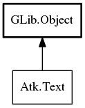

- Text
- attribute_for_name
- attribute_get_name
- attribute_get_value
- attribute_register
- free_ranges
- add_selection
- get_bounded_ranges
- get_caret_offset
- get_character_at_offset
- get_character_count
- get_character_extents
- get_default_attributes
- get_n_selections
- get_offset_at_point
- get_range_extents
- get_run_attributes
- get_selection
- get_string_at_offset
- get_text
- get_text_after_offset
- get_text_at_offset
- get_text_before_offset
- remove_selection
- set_caret_offset
- set_selection
- text_attributes_changed
- text_caret_moved
- text_changed
- text_insert
- text_remove
- text_selection_changed
Text
Object Hierarchy:
Description:
All known implementing classes:

Namespace: Atk
Package: atk
Content:
Static methods:
- public static TextAttribute attribute_for_name (string name)
- public static unowned string attribute_get_name (TextAttribute attr)
- public static unowned string attribute_get_value (TextAttribute attr, int index_)
- public static TextAttribute attribute_register (string name)
- public static void free_ranges (TextRange[] ranges)
Methods:
- public abstract bool add_selection (int start_offset, int end_offset)
- public virtual TextRange[] get_bounded_ranges (TextRectangle rect, CoordType coord_type, TextClipType x_clip_type, TextClipType y_clip_type)
- public abstract int get_caret_offset ()
- public abstract unichar get_character_at_offset (int offset)
- public abstract int get_character_count ()
- public abstract void get_character_extents (int offset, int x, int y, int width, int height, CoordType coords)
- public abstract AttributeSet get_default_attributes ()
- public abstract int get_n_selections ()
- public abstract int get_offset_at_point (int x, int y, CoordType coords)
- public abstract void get_range_extents (int start_offset, int end_offset, CoordType coord_type, TextRectangle rect)
- public abstract AttributeSet get_run_attributes (int offset, out int start_offset, out int end_offset)
- public abstract string get_selection (int selection_num, out int start_offset, out int end_offset)
- public abstract string? get_string_at_offset (int offset, TextGranularity granularity, out int start_offset, out int end_offset)
- public abstract string get_text (int start_offset, int end_offset)
- public abstract string get_text_after_offset (int offset, TextBoundary boundary_type, out int start_offset, out int end_offset)
- public abstract string get_text_at_offset (int offset, TextBoundary boundary_type, out int start_offset, out int end_offset)
- public abstract string get_text_before_offset (int offset, TextBoundary boundary_type, out int start_offset, out int end_offset)
- public abstract bool remove_selection (int selection_num)
- public abstract bool set_caret_offset (int offset)
- public abstract bool set_selection (int selection_num, int start_offset, int end_offset)
Signals:
- public virtual signal void text_attributes_changed ()
- public virtual signal void text_caret_moved (int location)
- public virtual signal void text_changed (int position, int length)
- public signal void text_insert (int arg1, int arg2, string arg3)
- public signal void text_remove (int arg1, int arg2, string arg3)
- public virtual signal void text_selection_changed ()
Inherited Members:
All known members inherited from class GLib.Object